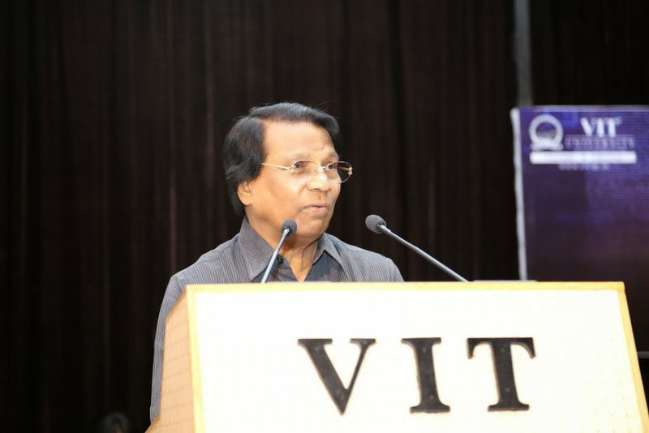
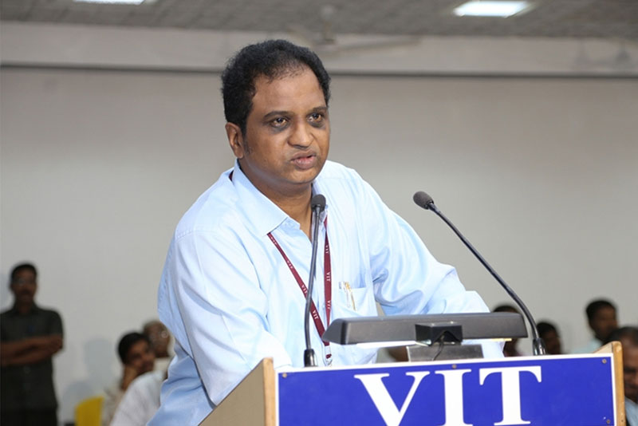
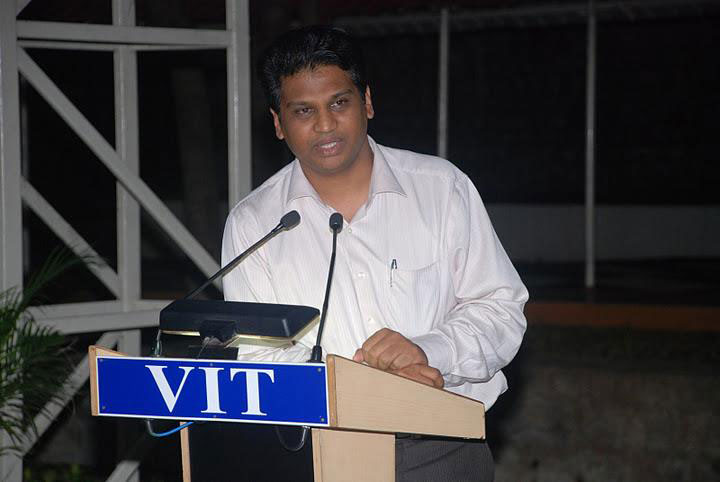
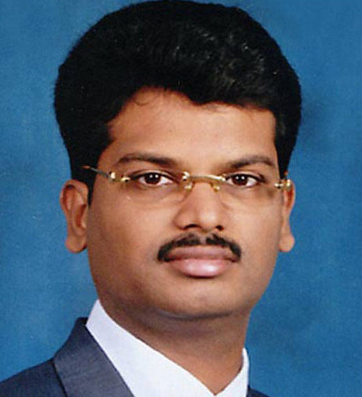
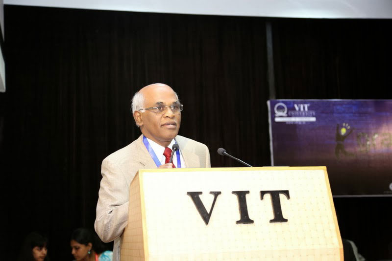
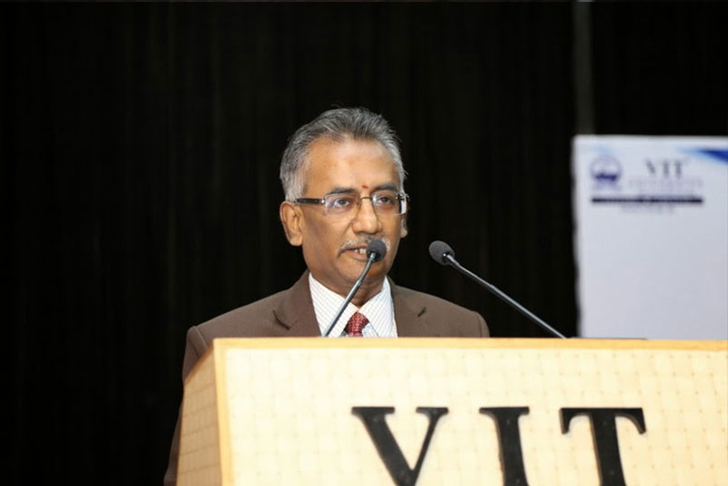

Dr. G Viswanathan

- Chief Patron
- Chancellor
Dr. GV, the founder-chancellor of VIT University, was born on December 8, 1938 in a remote village near Vellore in Tamil Nadu. Dr. GV’s life is a source of inspiration to the modern-day youth.
Mr. Sankar Viswanathan

- Patron
- Vice President
Mr. Sankar Viswanathan completed his Advanced Diploma in Engineering Technology, at Chisholm Institute, Melbourne, Australia. He has held honoured positions as the Chairman, and Vice-Chairman of Vellore Engineering College, Vellore before taking over charge as the Pro-Chancellor (Academic) at VIT.
Dr. Sekar Viswanathan

- Patron
- Vice President
Dr. Sekar started his journey as a student of Electronics and Communication Engineering at VEC in 1986, two years after the college was founded, giving up his admission in College of Engineering, Guindy, Anna University. He helped his father, the Chancellor Mr.G.Viswanathan, in both strategy and execution right from the beginning and was instrumental in building the institution in its founding years and setting it up to become a university and then subsequently the #1 Private Engineering Institution that it is today.
Mr. G V Selvam

- p; Patron
- Vice President
Mr. Selvam holds an MBA from the University of Madras. Mr.Selvam assumed charge as Vice Chairman of Vellore Engineering College in 1999, and worked towards elevating the institution to a University. Following the footsteps of his illustrious father, Mr.Selvam spearheaded the evolution of the erstwhile Vellore Engineering College to VIT University, an institution of international repute. He assumed charge as the first Pro Chancellor of VIT University. This bestowed on him the rare honour of being the Youngest Pro-Chancellor in the world as cited in the Limca Book of Records, 2005.
Prof. V Raju

- Co-Patron
- Vice Chancellor
Prof. Raju, represents VIT faculty's commitment to and dedication for preparing the graduates for challenges in science, engineering, technology, management and the society. He also represents the university's collective commitment to excellence in teaching, learning, research and service. He is a strong proponent of an educational process that nurtures creativity, innovation and entrepreneurship while providing the students with strong fundamentals.
Prof. Raju is a senior member of the Society of Manufacturing Engineers (SME) and is the past Chair of its Manufacturing Education and Research Community. He is also a member of the American Society for Engineering Education and the past Chair of its Manufacturing Engineering Division. As a representative of SME, he has been associated with the international accrediting agency ABET Inc., ( used to be known as the Accreditation Board for Engineering and Technology ). In the past, he has served as a Commissioner of the Technology Accreditation Commission and the Applied Science Accreditation Commission of ABET.
Ms. Kadhambari
- Co-Patron
- Asst. Vice-President
Kadhambari completed school education at Vellore, and obtained her B.Tech (Biotechnology) from VIT University in 2010.
After graduation in Biotechnology from VIT University, Kadhambari joined the prestigious Bloomberg School of Public Health at Johns Hopkins University, Baltimore, USA for Masters in Health Sciences.
At an early age of twelve, Kadhambari authored the biography of her grand father and Chancellor of VIT University, Dr.G.Viswanathan, titled “My Granpa” . She has been honoured by the Limca Book of Records as the youngest biographer in India. She had the privilege of personally interacting with Dr.A.P.J. Abdul Kalam and Dr.R.Venktaraman the former Presidents of India, the former Prime Minister Atal Bihari Vajpayee and the President of Rwanda, Dr.Paul Kagame. These interactions have motivated her to march forward to achieve bigger and better goals in life.
Prof. S Narayanan

- Co-Patron
- Pro VC(VELLORE)
Dr. Anand A. Samuel, holds PhD from Anna University and has 2 years experience in
industries
24 years of Teaching & Research in Anna University
3 years as Principal at VIT
1 year as Dean (Academics) at VIT
1 year as Registrar at VIT and for the past 1 year as Pro Vice Chancellor
His professional credentials include:
Former Regional Director – ISHRAE
Former Executive Committee Member – ASHRAE
Former Secretary – QCFI, Chennai
‘Master Trainer’ – certified by ISTE, New Delhi.
‘Quality Lead Assessor’ – certified by BSI, UK
Recipient of Life Time Achievement Award from QCFI
Published more than 90 research papers in Journals and Conferences
Written a book on Total Quality Management
Completed 5 funded research projects
Prof. Anand A Samuel

- Co-Patron
- Pro VC(CHENNAI)
Prof. S. Narayanan received his Bachelors in Mechanical Engineering, Masters and Doctorate in Industrial Engineering and Management from Pondicherry University. With nearly 27 years of teaching experience and 2 years of industrial experience, he has contributed more than 90 research papers in various reputed International, National Journals and conferences. His areas of interest include Industrial Engineering and Management, Manufacturing etc., Eight Scholars have been awarded Ph.D under his guidance and he has provided guidance for more than 20 M.Tech student projects. He is currently guiding 6 Ph.D scholars.